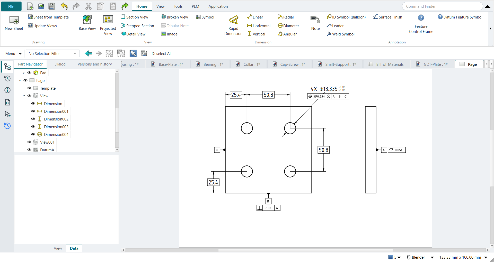

Tutorial H: GD&T plate drawing
| Book |
Cogorno, Geometric Dimensioning and Tolerancing for Mechanical Design, 3rd ed., ch. 12.2 and ch. 8 (Prob. 12-3) |
| You learn |
Datum Feature Symbol, Feature Control Frame, basic dimensions, a hole note with limits, the ASME standard |
| Sizes |
A 101.6 × 101.6 × 12.7 mm plate (its size is in a figure only) with 4X Ø12.954–13.716 holes; basic 25.4 and 50.8 mm from B and C. The book’s inch values are converted exactly: Ø0.254 position, 0.102 perpendicularity, 0.051 flatness. |

In short
-
Ctrl+Shift+D, New Sheet; set Preferences › TechDraw › Dimensions › Standard and Style to ASME Inlined.
-
Base View of the plate’s face; a second Base View for its edge.
-
A cosmetic vertex on each hole centre, then Horizontal and Vertical dimensions; tick Theoretical Exact for basic ones.
-
Diameter on a hole: 4X and ±0.381 in its properties.
-
Select an edge, Datum Feature Symbol: A on the back face, B on the bottom edge, C on the left edge.
-
Feature Control Frame: flatness 0.051 on A; perpendicularity 0.102 to A on B; position Ø0.254 at MMC to A|B|C under the hole note.
Step by step
| # | In the book (NX) | In FreeCAD NX-Style | Result | Notes |
|---|---|---|---|---|
H1 |
The plate: 101.6 x 101.6 x 12.7 mm, 4 holes on a 50.8 mm square |
modelled by script (the exercise is the drawing) |
same |
volume 124001.7 mm^3; back face (z = 0) is datum A, bottom edge (y = 0) B, left edge (x = 0) C |
H2 |
File > Drafting, New Sheet |
Ctrl+Shift+D + ribbon 'Home › Drawing > New Sheet' |
same |
|
H3 |
Drafting Preferences: ASME standard |
Preferences > TechDraw > Dimensions > Standard and Style = ASME Inlined |
differs |
was ISO Oriented; NX sets the drafting standard in Drafting Preferences |
H4 |
Base View: the plate’s face, scale 1:1 |
body selected + ribbon 'Home › View > Base View', MB2 on the sheet |
same |
direction set to look at the face (the book’s front view) |
H5 |
Projected view to the right: the plate’s edge, back face A |
second Base View, MB2 |
differs |
as in tutorial D, a second Base View stands in for a view projected off the base view |
H6 |
Arc centres for the dimensions |
cosmetic vertex on each hole centre |
differs |
4 holes, 4 cosmetic vertices, found as ['Vertex6', 'Vertex9', 'Vertex12', 'Vertex15']; NX snaps dimensions to arc centres, TechDraw needs vertices there first |
H7 |
Basic dimension 25.4 (C to the hole) |
two vertices + ribbon 'Home › Dimension > Horizontal', then basic |
differs |
measured 25.4; NX: Basic is a Tolerance type in the dimension dialog, TechDraw: the Theoretical Exact property draws the box |
H8 |
Basic dimension 50.8 (hole spacing) |
two vertices + ribbon 'Home › Dimension > Horizontal', then basic |
differs |
measured 50.800000000000004; NX: Basic is a Tolerance type in the dimension dialog, TechDraw: the Theoretical Exact property draws the box |
H9 |
Basic dimension 25.4 (B to the hole) |
two vertices + ribbon 'Home › Dimension > Vertical', then basic |
differs |
measured 25.4; NX: Basic is a Tolerance type in the dimension dialog, TechDraw: the Theoretical Exact property draws the box |
H10 |
Basic dimension 50.8 (hole spacing) |
two vertices + ribbon 'Home › Dimension > Vertical', then basic |
differs |
measured 50.800000000000004; NX: Basic is a Tolerance type in the dimension dialog, TechDraw: the Theoretical Exact property draws the box |
H11 |
Hole note: 4X Ø12.954-13.716 (.510-.540 in) |
hole edge + ribbon 'Home › Dimension > Diameter'; 4X and ±0.381 in the dimension’s properties |
differs |
diameter 13.335; FreeCAD shows Ø13.335 ±0.381 (NX can also show the limits 13.716/12.954) |
H12 |
Datum Feature Symbol A on the back face (right edge of the edge view) |
edge Edge2 + ribbon 'Home › Annotation > Datum Feature Symbol', 'A', MB2 = OK |
differs |
triangle 0.0 mm from the edge; editable letter ['A']; FreeCAD 1.1 has no datum feature symbol, NXStyle adds NX’s |
H13 |
Datum Feature Symbol B on the bottom edge |
edge Edge0 + ribbon 'Home › Annotation > Datum Feature Symbol', 'B', MB2 = OK |
differs |
triangle 0.0 mm from the edge; editable letter ['B']; FreeCAD 1.1 has no datum feature symbol, NXStyle adds NX’s |
H14 |
Datum Feature Symbol C on the left edge |
edge Edge3 + ribbon 'Home › Annotation > Datum Feature Symbol', 'C', MB2 = OK |
differs |
triangle 0.0 mm from the edge; editable letter ['C']; FreeCAD 1.1 has no datum feature symbol, NXStyle adds NX’s |
H15 |
Flatness 0.051 on datum A (.002 in, Prob. 12-3) |
selection + ribbon 'Home › Annotation > Feature Control Frame'; dialog filled; MB2 = OK |
differs |
frame 'flatness | 0.051'; editable values ['0.051']; FreeCAD 1.1 has only fixed GD&T pictures, NXStyle adds NX’s Feature Control Frame dialog |
H16 |
Perpendicularity 0.102 to A on datum B (.004 in) |
selection + ribbon 'Home › Annotation > Feature Control Frame'; dialog filled; MB2 = OK |
differs |
frame 'perpendicularity | 0.102 | A'; editable values ['0.102', 'A']; FreeCAD 1.1 has only fixed GD&T pictures, NXStyle adds NX’s Feature Control Frame dialog |
H17 |
Position Ø0.254 (M) to A, B, C under the hole note (.010 in at MMC) |
selection + ribbon 'Home › Annotation > Feature Control Frame'; dialog filled; MB2 = OK |
differs |
frame 'position | Ø0.254 (M) | A | B | C'; editable values ['0.254', 'A', 'B', 'C']; FreeCAD 1.1 has only fixed GD&T pictures, NXStyle adds NX’s Feature Control Frame dialog |
| Result | Means |
|---|---|
same |
The book’s NX steps work as written. |
differs |
It works, but the FreeCAD way is different; the notes say how. |
limit |
The book’s way fails in FreeCAD itself; a workaround follows in the next steps. |
missing |
FreeCAD has no such function; a stand-in follows. |
skipped |
Not replayed; the notes give the reason. |
FAILED |
Did not work. |
What differs from NX
-
FreeCAD 1.1 has only fixed GD&T pictures; NX-Style adds NX’s two dialogs, with values that stay editable.
-
TechDraw dimensions need vertices at hole centres; NX snaps to arc centres.
-
The hole limits show as Ø13.335 ±0.381; NX can also show them as limits.
-
TechDraw’s default standard (ISO Oriented) writes a hole note along its leader; ASME is a preference.